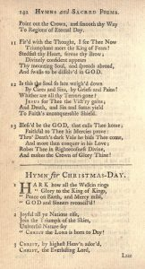
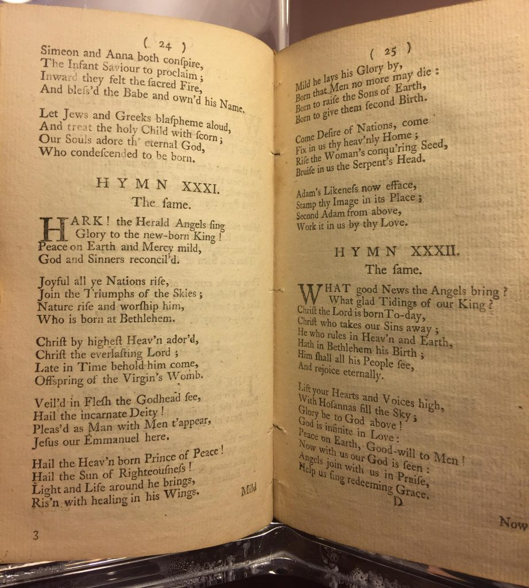
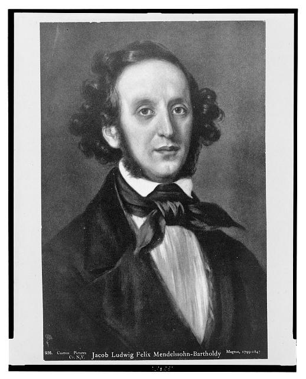
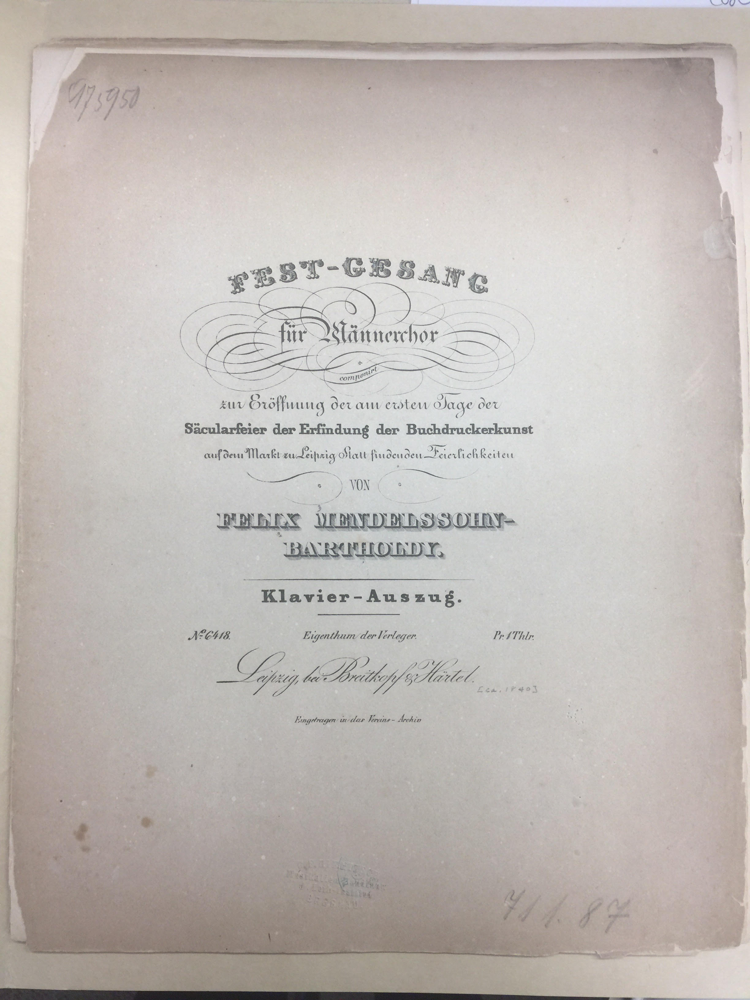
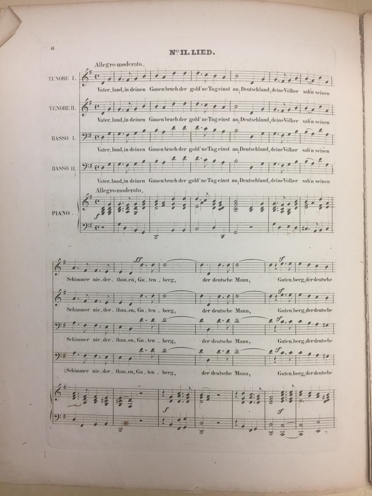
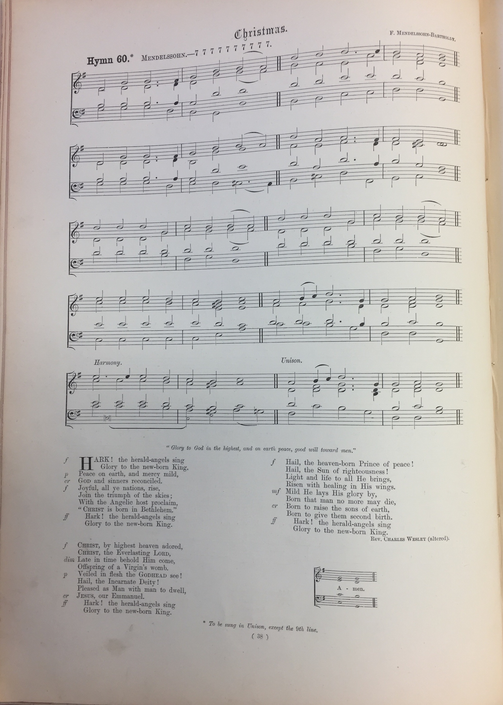

“Hark! The Herald Angels Sing” is one of the most popular Christmas carols we hear during the holidays, and one with an especially interesting history involving four creative minds over the span of two centuries. While the history is well documented, source materials in the Library of Congress’s collections provide engaging illustrations detailing the evolution of this holiday favorite. In an effort to streamline that history, let’s approach its evolution one step at a time!
Engraving of Charles Wesley. Prints & Photographs Division, Library of Congress.
Step 1: A Methodist preacher’s 1739 hymn
Charles Wesley (1707-1788) was an English leader of the Methodist movement (his older brother, John Wesley, was founder of the movement). Over the course of his career, Wesley published over 6,000 hymns (text, no music); one of those hymns, entitled “Hymn for Christmas-Day,” was printed in John and Charles Wesley’s collection Hymns and Sacred Poems (London, 1739). The Internet Archive provides full access to a digitized copy of the 1743 edition of this work:

John and Charles Wesley’s collection “Hymns and Sacred Poems” (London, 1739). Internet Archive.
Of course, this hymn doesn’t look quite right to us: “Hark how all the Welkin rings, Glory to the King of Kings” – close, but not quite! To find a more familiar looking hymn, we must look ahead fourteen years to 1753 when George Whitefield adjusted the text.
Step 2: A contemporary preacher alters the text
George Whitefield, M.A. / Elisha Gallaudet sculp., N. York 1774. Prints & Photographs Division, Library of Congress.
Wesley’s friend and colleague George Whitefield (1714-1770) was a famous preacher and instrumental force in the “Great Awakening”; he studied with the Wesley brothers early in his career and was inspired to re-work Wesley’s “Hymn For Christmas-Day,” most notably changing the opening lines to what we all now know by heart. See the altered hymn as published in Whitefield’s A Collection of Hymns for Social Worship (London, 1753). One of my favorite aspects of these hymn collections is how the publisher included at the bottom of every page the upcoming word from the top of the next, to help the reader better anticipate the next phrase – I often employ this technique in my choral scores when singing with a nasty page turn!

George Whitefield’s “A Collection of Hymns for Social Worship” (London, 1753), Rare Book and Special Collections Reading Room, Library of Congress.
Step 3: An Englishman applies a new tune
The English musician William Hayman Cummings (1831-1915) accomplished a unique feat when in 1855 he married Whitefield’s adaptation of Wesley’s hymn to a melody by one of classical music’s most notable composers: none other than the great Felix Mendelssohn (1809-1847).
Jacob Ludwig Felix Mendelssohn-Bartholdy by Eduard Magnus. Prints & Photographs Division, Library of Congress.
Cummings, a tenor, organist, and educator, had personally encountered Mendelssohn as a teenager when he sang in the chorus under the direction of the composer himself at the London premiere of Elijah in 1847. Eight years later, while considering Whitefield’s reworking of the Wesley Christmas hymn, Cummings thought of a tune from a different Mendelssohn work — his 1840 cantata, Festgesang zur Eröffnung der am ersten Tage der vierten Säcularfeier der Erfindung der Buchdruckerkunst. The cantata was originally composed for men’s chorus, two brass orchestras, and timpani in celebration of the 400th anniversary of the invention of the printing press. (Note that many sources identify the “Hark!” tune as coming from Mendelssohn’s Festgesang an die Kunstler, which is a completely different piece and incorrect!) The Music Division holds a first edition copy of the piano-vocal score for Festgesang zur Eröffnung (call number M3.3.M54 No.9D). See the first page of the cantata’s second movement (the text begins, “Vaterland, in deinen Gauen…”) and follow along with the melody; it’s unexpected to encounter such a familiar Christmas tune with a secular German text laid underneath!


Mendelssohn “Festgesang zur Eröffnung der am ersten Tage der vierten Säcularfeier der Erfindung der Buchdruckerkunst” (1840). Music Division, Library of Congress, call number M3.3.M54 No.9D.
Movement II of the Mendelssohn Festgesang, showcasing “Hark!” melody.



Rev. R.R. Chope’s “The Congregational Hymn & Tune Book” (1874 editions), with Mendelssohn and Wesley credited. Music Division, Library of Congress, call number M2136.H97 1875.
Though his name is never printed alongside Mendelssohn nor Wesley, Cummings triumphs as the hero of this tale, fusing together the work of three men (Wesley, Whitefield, and Mendelssohn) who never could have foreseen such an enduring product. It’s striking how perfectly Mendelssohn’s melody and Whitefield’s version of the Wesley text fit together; one might never suspect that the two were intended to exist as separate entities! Cummings’ arrangement was reportedly printed as early as 1857. I located an early printing of the carol in the 1859 publication of Rev. R. R. Chope’s The Congregational Hymn & Tune Book, printed in Bristol, England, though neither Wesley nor Mendelssohn are credited in the hymn book; the score is simply identified at the top of the page as “Christmas – Hymn 7.” Fourteen years later, however, in the 1874 edition of the same publication, both Mendelssohn and Wesley are identified; Wesley’s lyrics are notated as “altered,” a nod to Whitefield’s changes to Wesley’s original text (it’s interesting that Whitefield rarely gets credited, despite the significant changes he made to Wesley’s hymn). Also note in this edition the specified dynamics, indicated not in the score but in the text at the bottom of the page.
Cummings was more than a capable musician – he founded the Purcell Society in 1876, held professorship at the Royal Academy of Music towards the end of the 19th century, and later served as principal of the Guildhall School Music, among other notable positions. His musicological interests come to life with his 1902 published history of the anthem “God Save the King.” He also maintained a significant collection of antiquarian music materials, a portion of which the Library of Congress purchased in the early 20th century. Cummings’ legacy provides enough fodder for another fascinating blog post, one I look forward to writing in 2017! For now, we hope our readers enjoy a restful holiday season, and perhaps you will more deeply appreciate the history of “Hark! The Herald Angels Sing” next time you hear it – and you know you’ll hear it in the next week, be it in performance, worship, on television, or shopping!